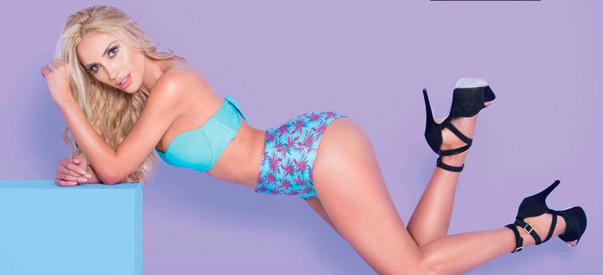

Anita Beleño
Agradecemos a
GUADALUPE UNDERWEAR por el vestuario
Visítalos en Instagram @guadalupeunderwear
Cra 14 A No 82 – 16 piso 2 zona T Bogotá
Tel: 3176413759
 @anita_beleno
@anita_beleno
 Anita Beleño
Anita Beleño
Nació en Medellín
Medidas: 88 – 60 – 98
Signo: Libra
Le gusta leer y dormir
Le tiene miedo a la soledad
Se considera ansiosa, celosa e impaciente
Fue la modelo del tema “Si no le contesto” de Plan B
Esta espectacular paisa de belleza natural, rasgos exóticos y personalidad arrolladora, debutó como presentadora a sus 17 años, la televisión fue su plataforma para darse a conocer, posicionarse y convertirse en la imagen de reconocidas marcas nacionales e internacionales de ropa interior y exterior.
De su físico destaca sus senos, los cuales no ha querido operar porque le encanta su cuerpo tal como es. También resalta sus piernas tonificadas y su rostro de muñeca, que la hacen única y diferente al resto de modelos.
“Cuando estoy estresada, prendo velas en mi cuarto y pongo música que me relaje”
Para mantenerse en forma, come balanceado, realiza ejercicio constantemente y duerme bastante, entre risas, Anita afirma que esa ha sido su estrategia para verse esbelta: “Amo dormir, es maravilloso para la belleza. Nos levantamos cada días más lindas cuando tenemos bastantes horitas de sueño y estar contentas y felices. Pero también creo que ser buena persona lo hace ver a uno más lindo”.
“Hace poco me convertí en la tía de Gabriela, me tiene loca y enamorada. La amo, la adoro, es como mi postrecito”.

En su clóset no pueden faltar tres prendas: una minifalda, un pantalón ajustado y un vestido sexy.
En este mundo también hay días difíciles y aunque considera el modelaje como un medio algo complicado, afirma tener bastante madurez emocional para que los comentarios o la mala vibra de la gente no le compliquen la vida.
Entre otras cosas, nos confesó ser fanática del celular, es lo primero que ve cuando se levanta, pues le gusta estar al día con las redes sociales. También adora los animales, en especial los gatos, por ello tiene cinco, además de dos perros.
Un piropo que recuerda y le pareció chistoso, aunque irónico, fue “Que mujer tan fea”
La enamoran los hombres inteligentes y con muy buen sentido del humor, que la hagan sonreír, algo no muy difícil para Anita, pues es muy extrovertida y risueña. Eso sí, no la inviten a una rumba electrónica ya que tolera poco este tipo de música y ni se atrevan a decirle mentiras, pues le molestan las personas embusteras.
Este año se graduará como Diseñadora de Modas. En el 2018 lanzará su propia línea de prendas femeninas, la cual permitirá que las mujeres se vistan con clase, glamour, sofisticadas y se vean distintas. Con esto, también espera le lleguen propuestas para presentar algún programa relacionado con este tema.

{kind=link}
{kind=link}
{kind=link}
{kind=link}
{kind=link}
{kind=link}
{kind=link}
{kind=link}
{kind=link}
{kind=link}
{kind=link}
Agradecemos a:
DULCEMENTA por el vestuario
Visítalos en Instagram @dulcementa
Cra 11 No. 82 – 18 Bogotá /
Calle 122 No. 18 B – 54
www.dulcementa.com.co
Tel: (1) 5304582
InModels- AGENCIA
Visítalos en Instagram:
@InModelsGroup